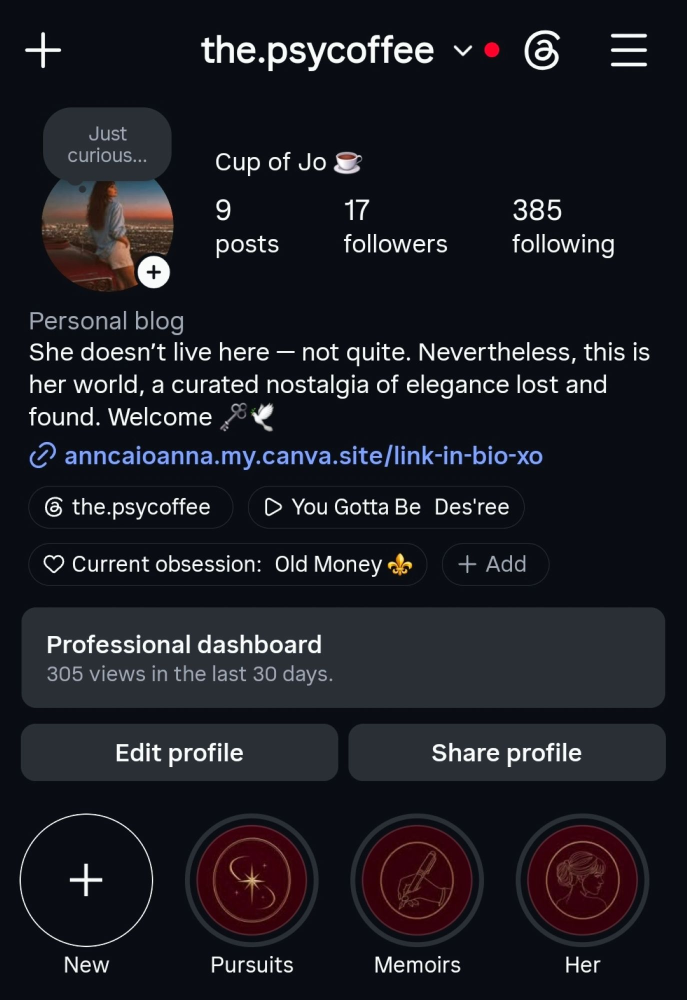
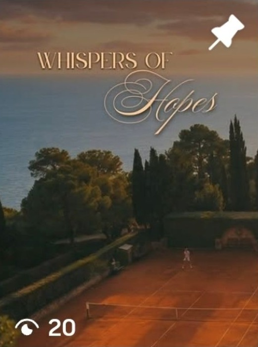
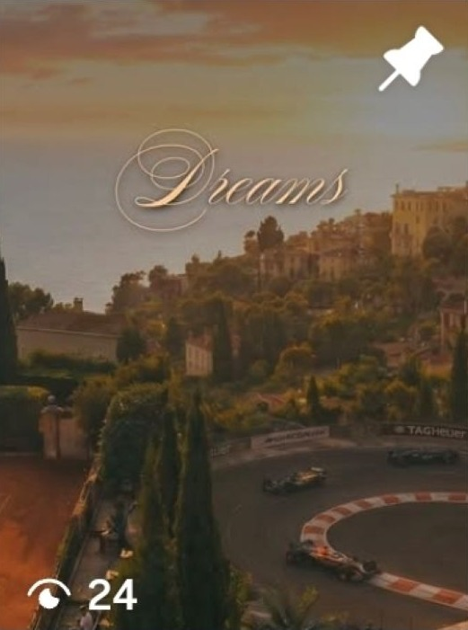
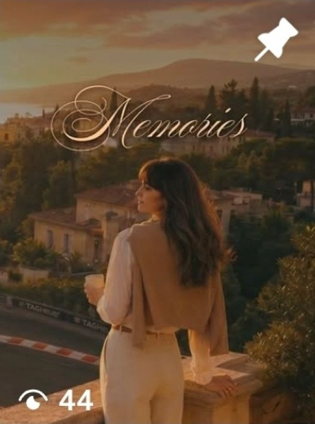
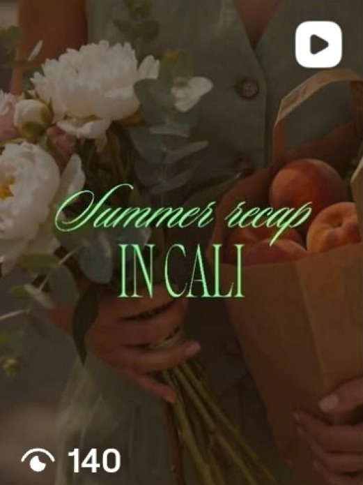
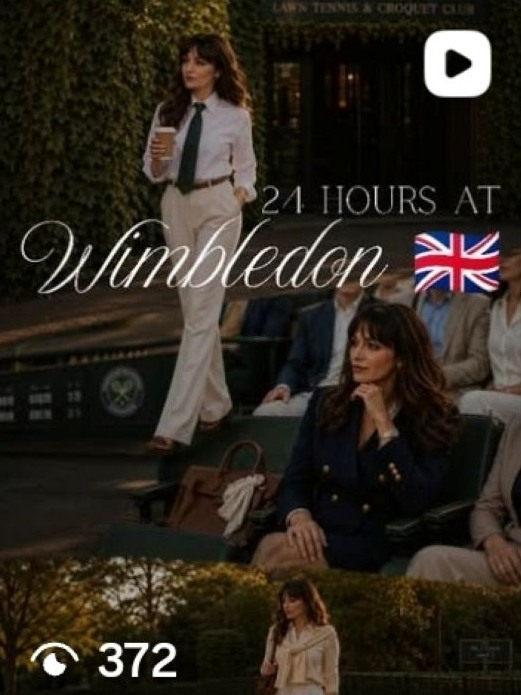
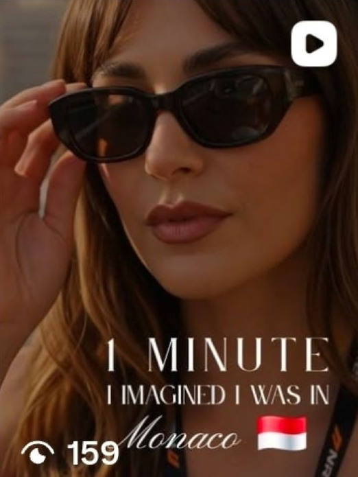

24 Hours at Wimbledon
- Views
- 372
- Viewers
- 329
- Likes
- 3
- Shares
- 1
- Average watch time
- 4 sec
- Follows
- 0
Vol. 03
Personal Project · Brand Identity · Editorial Content · Instagram
The PsyCoffee is a personal editorial Instagram concept built around aspirational living, visual nostalgia and heritage-inspired lifestyle storytelling. Created as a creative experiment, the project explores how a refined aesthetic world can be translated into a recognisable content direction through Reels, imagery and tone.

The project began as a way to explore a world I have always been drawn to — one shaped by Ralph Lauren sensibilities, la dolce vita references, understated elegance and the kind of visual nostalgia that feels both distant and deeply personal.
The concept became a space for imagining a lifestyle through visual storytelling: elegant destinations, cultural moments, slow living, refined femininity and the atmosphere surrounding them.
Rather than focusing on growth-first social media tactics, the objective was to build a coherent brand world and explore how mood, aspiration and identity could be expressed through short-form editorial content.
Establish a consistent visual and emotional direction.
Turn an abstract lifestyle idea into tangible short-form storytelling.
Create consistency across imagery, typography, tone and subject matter.
The PsyCoffee is intended for people drawn to refined, aspirational living, understated elegance, heritage-inspired aesthetics and a slower, more intentional approach to lifestyle.
The audience is defined more by shared cultural interests and aesthetic sensibilities than by a narrow demographic profile.
The visual system combines warm, muted imagery with elegant typography and cinematic references. The intention is not to reproduce luxury literally, but to communicate the codes surrounding it: restraint, atmosphere, heritage, leisure and attention to detail.
Destinations, cultural moments and imagined experiences presented through aspirational short-form storytelling.
Examples include California, Monaco and Wimbledon-inspired content.
Dreamlike fragments built around memory, atmosphere and imagined experiences.
Examples include themes such as Whispers of Hope, Dreams and Memories.
A softer exploration of style, rituals, presence and sophisticated feminine imagery within the wider lifestyle world.






Even with a small existing audience, selected Reels reached beyond the account’s follower base. Among the available examples, the Wimbledon-themed Reel generated the strongest reach, suggesting early potential for aspirational, event-led storytelling built around recognisable cultural references.
The PsyCoffee became an exercise in brand-world building: taking an abstract lifestyle aspiration and translating it into a more recognisable visual and editorial identity.
The project demonstrates how creative direction, content curation and short-form storytelling can work together to give an idea its own atmosphere, language and point of view.